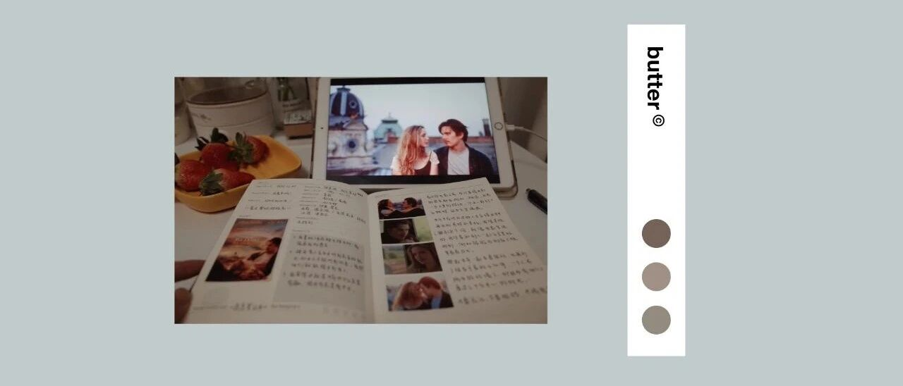

我的一月学习成长计划｜温柔知上进
点击关注秋秋很开心
每周一篇好用APP、学习、成长干货

图：@网络
文：@秋秋
大家好，我是秋秋。
每月成长计划是我计划新开的一个专题，在2021年，我会把每月计划和月末复盘总结下来。
希望大家看到这些内容，也能获取一丝灵感，或者能一起进步。
一、1月关键词
在每个月的月初，我会给这个月定一个关键词，以此来规划要做的事。
有了这个核心，你回顾的时候就不会特别零散。
1月的关键词是 坚 韧 ，和天气有关，冬天就是要克服一下寒冷！

由此，我要做的事、要看的其他书和电影，就都围绕这个主题。
希望1月结束，我能在“坚韧”这个词上有所进益。
二、1月目标
我的一月目标很简单，大致分为3个板块。
学习、工作和生活。
学习也就是输入，主要是看书、电影、演讲这些。

1月的计划是每周1本书，周末2部电影，有空的时候再听个演讲或看部话剧。
因为我是自由职业，每天下午2-5点都有时间（上午写作、晚上拍视频），所以就能集中时间输入。
工作就是输出，主要是公众号文章和视频。每周各平台依旧是3条。
生活上，1月最大的目标是锻炼和出门。
最近看到猝死的新闻很多，还是希望有个相对健康的身体，周末也多和王同学多出去逛逛～打卡好玩的跟你们分享。
三、1月书单
一月的四本书，我选择了2本本身带有坚韧意义的，2本以前很少涉猎，读完就能锻炼我意志的。
1.《你当像鸟飞往你的山》

★ 比尔•盖茨年度荐书 第一名
★ 美国亚马逊年度编辑选书 第一名
我12月份差不多已经看了一半，看到女主摆脱原生家庭束缚，破茧成蝶真的很不容易。
这本书也推荐给大家。建议可以慢慢看，能感受到主人公情绪一点点的变化。
2.《自控力》

作者本身就是一名健康心理学家。
她为斯坦福大学继续教育项目开设了一门叫做“意志力科学”的课程，参与过这门课程的人称其能够“改变一生”。
可见作者有多优秀，不读一读真的可惜。
3.《何为良好生活》

一本哲学书。
我买来之后翻了几页就没再碰过，这个月重新捡起来，不了解的领域也要多多尝试一下。
4.《万历十五年》

黄仁宇的成名之作，也被很多美国大学采用为教科书。
我大学的时候读过（看人民的名义被种草的），但是读到张居正已死之后就没再读。
这本书给人启发很大，要读完。
四、一月电影
同样，一月的电影也选择了4部和坚韧主题有关的，4部我之前不太看的类型（漫威电影哈哈）。
因为篇幅有限，我就不再一一具体介绍，等月末看完挑几部感触深的，再出影评。
1.《沙漠之花》

2.《灿烂人生》

3.《辛德勒的名单》

4.《寻梦环游记》

5.《钢铁侠》
6.《无敌浩克》
7.《钢铁侠2》
8.《雷神》
（一次把漫威电影给补上）
视频上我不强调观看顺序，总之就找个周末集中看，一次看两部配上零食，真的不要太爽！
五、1月演讲和话剧
话剧是我之前定好的两部，演讲也和坚韧有一点点关系。
话剧的话，你们想看的话可以去B站搜名字看，演讲我用的是网易公开课，也搜索名字就可以。
1.话剧《活着》

2.话剧《窝头会馆》

3.演讲
《在闲暇时间如何关掉和工作相关的想法》

4.演讲
《如何3年内赚100万—成功的定义》

最近真的是太冷了，加上疫情反反复复，这个月都不打算出门去密集场所看话剧电影展览了，先把经典的都在家看咯～
六、每日的计划

每日：
1月的每天还是和之前一样，不用刻意勤奋，只要保持好规律作息就可以。
9点起床
10-12点写作
12-2点午休
2-5点阅读
5-7.30拍摄、剪辑
7.30-10点手帐、追剧
每周：
1.3条视频+文章上线
2.看完1本书 or 话剧并做笔记
3.看完2部电影并做观影笔记
4.每周出去美食一顿和散步一次
每月：
1.12条视频+12篇文章
2.4本书+8部电影
3.4个演讲OR话剧
4.出去打卡4次吃的玩的

我发现我真的是一个特别佛系的人。1月份就好好看书、好好学习、好好输出。
数字的目标并没有踏实做事来的舒服。
就享受1月，好好生活吧～
其他文章推荐：

原创文章，转载请告知本人并标注来源
粉丝vx：qiuqiu5261（朋友圈更新日常）
商务合作：17865514429 （微信）
请注明来意 :)
@微博：秋秋一日甜
喜欢记得星标，让我们一起成长